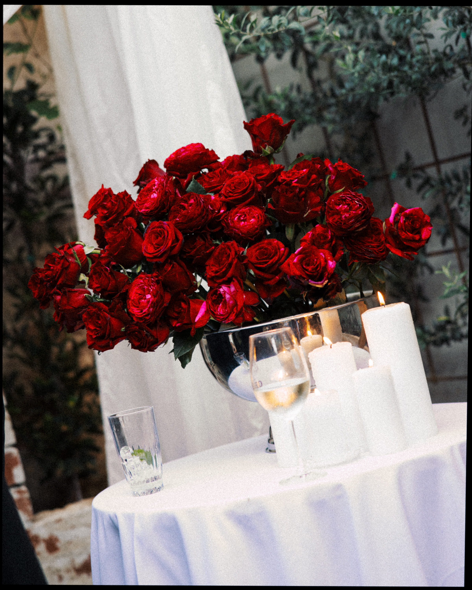

I make calm pictures of loud days.
I've been photographing weddings in Sydney since 2010. Roughly four hundred days, give or take, spent in churches and backyards and function rooms across Greater Sydney, the Blue Mountains, the Hunter and the Highlands.
I work quietly, mostly out of the way. I don't move people around or interrupt the day with a long portrait list. I pay attention instead — to a parent watching the ceremony from three rows back, to the half-second your friend laughs at a speech they've heard before, to the light turning gold against a glass of something on the table.
I shoot mostly on the digital bodies I've trusted for years, with a small film camera in the bag for the parts of the day that ask for it. My delivered galleries sit in the 600–900 image range, edited warm and consistent, ready to live with for the next forty years.
How I work
A short list, written down so we're on the same page before the day. None of these are dealbreakers. They're just what I've learned makes for pictures you'll still like in twenty years.
-
Documentary, not directed
I don't pose. I'll guide you for ten minutes of couple portraits and then I'm back in the background.
-
One photographer, present
Solo coverage as standard. If you want a second shooter for the morning, I'll bring someone I've worked with for years.
-
Cantonese on the day
Bilingual coverage for tea ceremonies and family formals — your grandmother and I will sort it out between us.
-
Edited the way I shoot
Warm, soft, consistent. Skin looks like skin. The whole gallery feels like one wedding, not fifty different photos.
-
Delivered when I said
Eight weeks for galleries, no exceptions. A small sneak peek within ten days.
-
Yours to keep
Print-release on every gallery. Print them, share them, hang them on the wall. They're your pictures.